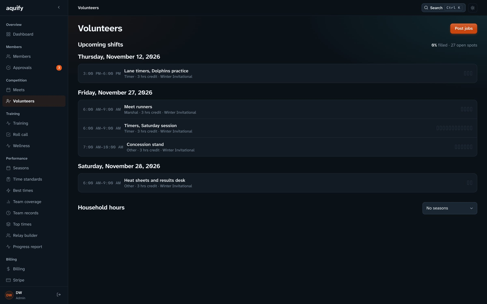
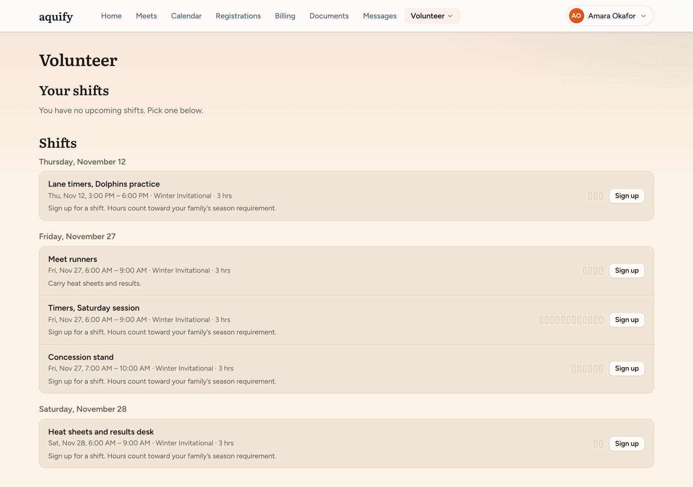
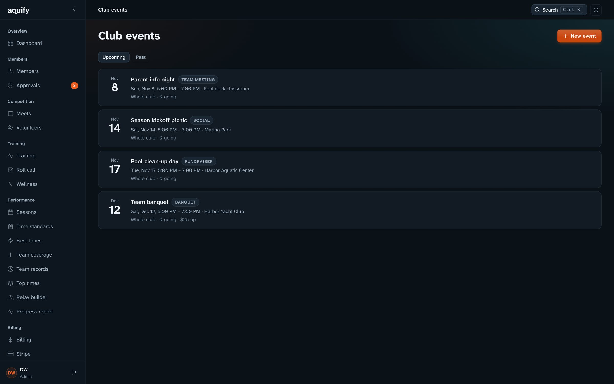
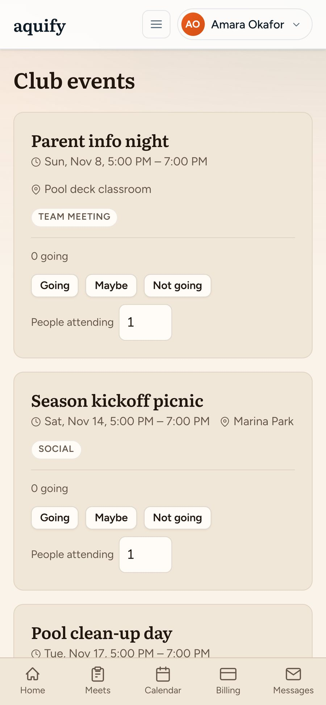

Fill every shift. Count every hour.
Volunteer jobs, service hours and club events, without the sign-up sheet.

Every shift in orderWith how many spots are left.
Hours by householdAgainst what each family owes.
Post a job in a minuteTimers, runners, setup, concessions.
Post the job. Families pick a shift. You check them in. Their hours add up on their own.
From a sheet on the wall to a list that counts itself.
1Post the shiftsSet the role, time, place and how many people you need. Link it to a meet or a club event.
2Families sign upFrom their phone, for their own household. Nobody can book the last spot twice, so you never end up over capacity.
3Check in on the dayMark who showed up. Those hours go on the family’s record.
4Hours add upSee each household against the season’s requirement. Set a different requirement for one family if you need to.


Parties, banquets and clean-up days.
Put any club event on the calendar and let families answer going, maybe or not going. Count guests and set a limit.
- Add a fee, and every family that says yes gets an invoice for it. If they change their answer before paying, the invoice cancels itself.
- Events can be for the whole club or for chosen groups.
- Pick which events show on your public page.

One tap to answer.
Families see what’s coming and answer from their phone. Everyone who says yes shows in your list with their guest count.
- Mark it all-day for dryland weekends or travel days.
- Events land in the family calendar automatically.
- Buy-outsLet a family pay instead of working a shift. aquify makes the invoice for you.
- Cancel cutoffSet how close to a shift a family can still back out. Staff can always cancel.
- Day-before remindersEach volunteer gets an email 24 hours before their shift.
- CreditsGive hours for a job outside the sign-up, like setup the night before.
- Swimmers see theirsOlder swimmers can see their family’s shifts without changing anything.
Ready when your club is.
We’re opening aquify to clubs in order. Leave your email and we’ll tell you when it’s your turn.
Join the waitlist